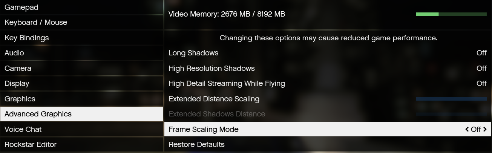
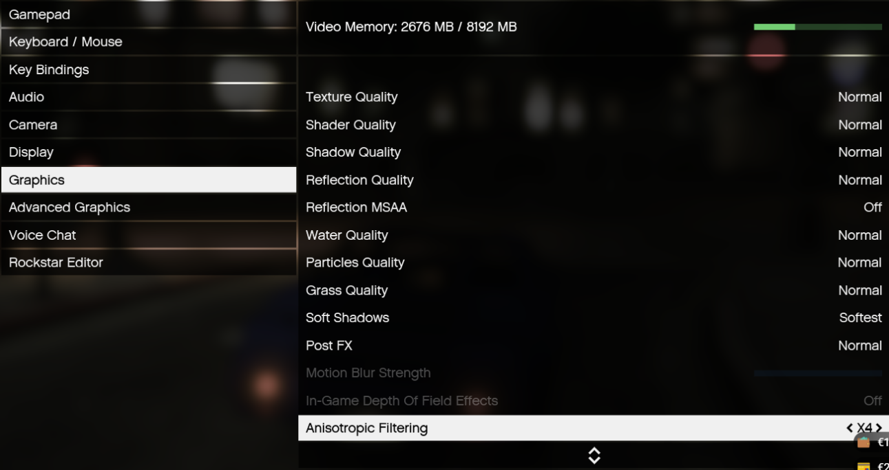
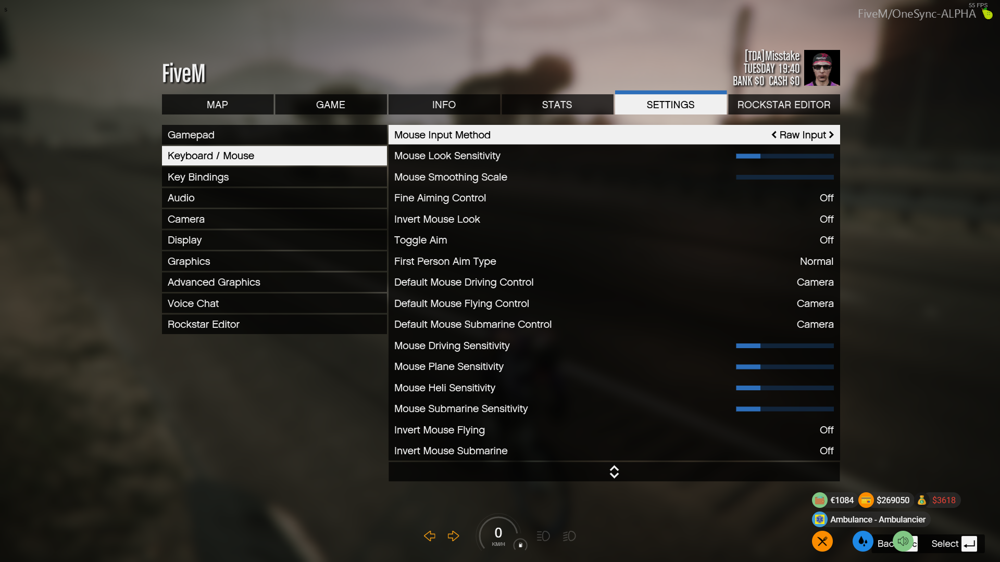
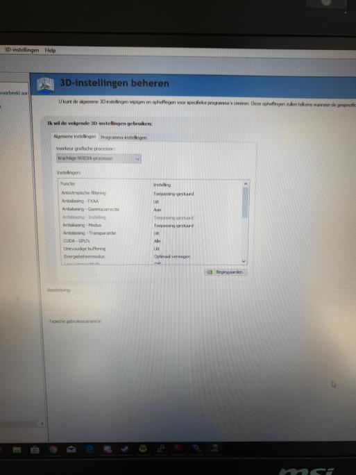
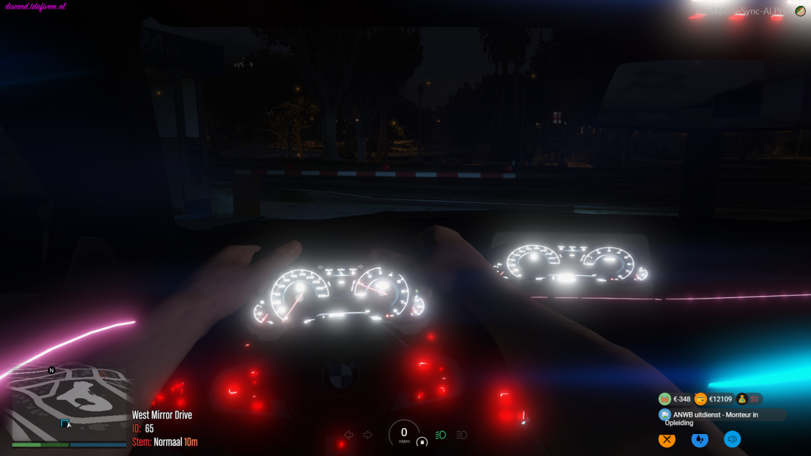

Bekende problemen en fixes
Hier vind je bekende problemen en mogelijke oplossingen voor in de server.
Het niet kunnen joinen van de server
Dit is nartuurlijk een vervelend probleem echter is hier een oplossing voor.
- Zorg er voor dat je in de discord zit en dat je de burger rang hebt. Deze kan je krijgen door de regels goed te lezen en te accepteren.
- Als je de rank burger hebt in discord en nog niet kan joinen kan een restart van je PC en het zorgen dat discord open staat en voor dat je fivem op start. Deze zal dan vervolgens vragen om toestemming om te koppelen met discord.
Bekende join messages waardoor je niet kunt joinen
Hieronder staan de oplossingen voor deze problemen!
- No FiveM ticket was specified. If this is an offline server, maybe set sv_lan? : De oplossing is om je FiveM te restarten! Werkt dit niet? Restart dan je pc en dan kun je je FiveM weer opstarten!
- Requestinq authenticating ticket... blijft hangen. : Restart je FiveM duurt dit dan nog lang? Probeer dan je cache te legen! Mocht dit beide niet werken zul je je pc moeten herstarten!
Keybind problemen
Als je problemen hebt met keybinds zoals kofferbakken die niet opengaan of proto's waar je niet in kan praten. Kan je kijken op het command unbindall in F8 en reloggen dit kan verhelpen. Je hebt dat de standaard instellingen weer zoals deze vanuit de server komen voor alle knoppen.
Citybug
Voor de "city bug" (door map heen vallen op hoge snelheden) probeer deze instellingen en let ook vooral op frame scaling en Texture Quality, deze zijn het allergelangrijkst om city bug te voorkomen.


Zorg er verder voor dat je C schijf niet tjok vol is, dus zorg ervoor dat je Windows dingen kwijt kan op de C schijf. Anders kun je ook nog proberen je page file groter te maken, maar dit kan in principe door simpel weg je C schijf meer ruimte te geven (10 GB vrije ruimte zou meer dan genoeg moeten zijn)
Upgrades LS Costums die niet werken
Als je upgrades niet ziet in LS Customs, ga eerst even terug, wacht een paar seconden e probeer het opnieuw, werken ze dan nog steeds niet geef dan even het model van de auto door.
Problemen met UI
Voor mensen die problemen hebben met UI's (muis die kan bewegen en character die ook mee beweegt) zorg er dan voor dat je Mouse Input Method staat op Raw Input zoals op de screenshot hierboven

Problemen met bellen
Voor de mensen die problemen hebben met hun telefoon (je hoort mensen wel maar zij horen jou niet) zorg er dan voor dat de microfoon die je normaal gebruikt ook in je windows instellingen als standaard staat ingesteld! Anders pakt hij de verkeerde microfoon
Game die blijft hangen
Mocht fivem niet openen en blijf je hangen in het zogenaamde blauwe loading screen dan kan dit helpen. Doe rechterklik op je bureaublad scherm en ga naar nvidia configuratie scherm. Vervolgens ga je naar 3d instellingen beheren En zet je voorkeur grafische processor op krachtige nvidea processor

Vel dashboard
mocht je last hebben van een vel dashboard zet dan je postfx lager
